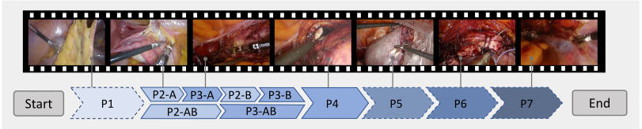
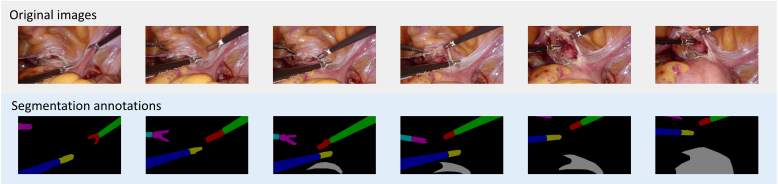

Computer-assisted minimally invasive surgery has great potential in benefiting modern operating theatres. The video data streamed from the endoscope provide rich information to support context-awareness for next-generation intelligent surgical systems. To enhance the surgical scene understanding towards image-guided automation, one promising solution is to rely on learning-based methods, which highly relies on large-scale, high-quality and multi-task labelled data. To address this issue, we present and release the AutoLaparo dataset.
AutoLaparo is a new dataset of integrated multi-tasks for image-guided surgical automation in laparoscopic hysterectomy. The dataset is developed based on full-length videos of entire hysterectomy procedures. Specifically, three different yet highly correlated tasks are formulated in the dataset, including surgical workflow recognition, laparoscope motion prediction, and instrument and key anatomy segmentation. In addition, experimental results with state-of-the-art models are provided as reference benchmarks for further model developments and evaluations on this dataset.
[paper] [code]
The AutoLaparo dataset contains 21 videos of laparoscopic hysterectomy collected from Prince of Wales Hospital, Hong Kong, during October to December, 2018. The release of this dataset has been approved by Joint CUHK-NTEC Clinical Research Ethics Committee and the data are protected without disclosure of any personal information. The videos are recorded at 25 fps with a standard resolution of 1920×1080 pixels.
The duration of videos ranges from 27 to 112 minutes due to the varying difficulties of the surgeries. After pre-processing, the average duration is 66 minutes and the total duration is 1388 minutes, reaching a large-scale dataset with high-quality. Three sub-datasets are designed for the following three tasks and they are
also highly-correlated by applying a three-tier annotation process.
Workflow analysis is fundamental to the scene understanding in surgery and will help to recognize current surgical phase and also provide high-level information to the other two tasks. In the dataset, the hysterectomy procedure is divided into 7 phases and each frame is annotated with a phase label:
Table 1. The total duration and average duration (hh:mm:ss) of the full-length videos in the dataset, and proportion of each phase in each video (P1-P7, %)
Figure 1. The order information of laparoscopic hysterectomy and sample frames of each phase (P1-P7)
To promote learning-based automatic FoV control, this sub-dataset is built with selected clips that corresponds the laparoscope visual feedback to its motion mode. In the dataset, 300 clips are carefully selected from Phase 2-4 of the aforementioned 21 videos and each clip lasts for 10 seconds. These clips contain typical laparoscope motions and the motion time T is set as the fifth second. Seven types of motion modes are defined, including one S
tatic mode and six non-static mode: Up, Down, Left, Right, Zoom-in, and Zoom-out.
Table 2. Type and number of the clips with laparoscope motion annotation
| Motion type | Up | Down | Left | Right | Zoom-in | Zoom-out | Static | All |
|---|---|---|---|---|---|---|---|---|
| Train set | 14 | 25 | 18 | 30 | 17 | 17 | 54 | 170 |
| Val. set | 3 | 4 | 10 | 15 | 12 | 12 | 10 | 57 |
| Test set | 5 | 26 | 9 | 9 | 15 | 15 | 14 | 73 |
| All num. | 22 | 45 | 20 | 54 | 44 | 44 | 78 | 300 |
Figure 2. From top to bottom: video examples of typical laparoscopic motions Up, Left, and Zoom-in.
Figure 2. From left to right: video examples of typical laparoscopic motions Up, Left, and Zoom-in.
For each clip in Task 2, six frames are sampled at 1fps, i.e., frames at time t=0,1,2,3,4,5, and annotated with pixel-wise segmentation, which provides ground truth for Task 3 and also support Task 1 and 2 as additional modality for advanced scene understanding. In the dataset, four types of instruments and one key anatomy is annotated in the dataset:
Table 3. Total number of presences in clips and frames, and total number of annotations of each class in the segmentation dataset. m and s denote the manipulator and shafr of the instrument, respectively
The annotations are performed with an open annotation tool called LabelMe available online, following the settings of instrument part segmentation, i.e., the shaft and manipulator of each instrument are annotated separately.
Figure 3. Pixel-wise annoatation for instrument and key anatomy segmentation.
[Data download
]
- Please kindly fill the request form if you want to gain access to the dataset. We will send you a link to download the dataset.
- IMPORTANT
:
The released dataset is provided only for academic research, NOT for commercial use.
[Citation]
- If you use this dataset, please cite:
...TBD...
For further question about the dataset, please contact ziyiwangx@gmail.com.